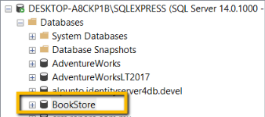

Esquema de la base de datos
El esquema de la base de datos, igual que cualquier otro elemento en el desarrollo de un proyecto, debe ser mantenida bajo un estricto control de versiones.
Esta guia indica como gestionar cada cambio en la base de datos, de forma que se garantize la integridad entre la aplicación y el esquema de la base de datos que almacena la información, asi como la distribución de los cambios en las tablas, campos, llaves, etc en los diferentes ambientes de trabajo, de pruebas y producción
Creación de la base de datos
Para persistir la información, en esta guía usaremos Microsoft SQL Server Express sin embargo cualquier base de datos relacional, como MySQL, Postgress, pueden ser usadas, realizando los ajustes requeridos en la configuración
Usando Microsoft SQL Server Management Studio, crea una base de datos con el nombre BookStore

Creación del esquema de datos
Ahora podemos crear las tablas en nuestra base de datos. Para mantener el esquema de la base de datos bajo control de versiones, usaremos una herramienta llamada Migrator.NET, asi como una serie de paquetes relacionados
Abre el proyecto apsys.training.bookstore.migrations e instala los siguientes paquetes
Install-Package FluentMigrator -Version 3.3.1
Install-Package FluentMigrator.Extensions.SqlServer -Version 3.3.1
Install-Package FluentMigrator.Runner -Version 3.3.1
Agregar tabla Authors
Vamos a crear una tabla para almacenar la información de la entidad Author. En el proyecto apsys.training.bookstore.migrations, agrega una clase llamada M01_CreateAuthorsTable como se muestra a continuación
[Migration(1)]
public class M01_CreateAuthorsTable: Migration
{
public override void Up()
{
Create.Table("Authors")
.WithColumn("Id").AsString().PrimaryKey()
.WithColumn("FirstName").AsString().NotNullable()
.WithColumn("LastName").AsString().NotNullable();
}
public override void Down()
{
Delete.Table("Authors");
}
}
Como observas la clase tiene el atributo [Migration(1)]. Este atributo estable un número consecutivo, no repetido de migración. En caso de omitir este atributo, la migración no se ejecutará
El método Up deberá contener los cambios a realizar en nuestro esquema de la base de datos. En este caso, agregamos una tabla llamada Authors con sus campos correspondientes. El método Down deberá contener el código que permita deshacer los cambios realizados en el método Up. En este caso, la eliminación de la tabla Authors
Todo cambio en el esquema de la base de datos deberá ser realizado a través de una migración. Jamás se deberán hacer cambios manualmente, porque el resto de los ambientes de trabajo, pruebas o producción no podrán ser actualizados correctamente
Ejecutando las migraciones
Para ver reflejados los cambios en nuestra base de datos, debemos ejecutar nuestras migraciones. Abre el archivo Program.cs del proyecto de migraciones y escribe el siguiente código
public class Program
{
static int Main()
{
try
{
CommandLineArgs parameter = new CommandLineArgs();
if (!parameter.ContainsKey("cnn"))
throw new ArgumentException("No [cnn] parameter received. You need pass the connection string in order to execute the migrations");
string connectionString = parameter["cnn"];
var serviceProvider = CreateServices(connectionString);
using var scope = serviceProvider.CreateScope();
UpdateDatabase(scope.ServiceProvider);
return (int)ExitCode.Success;
}
catch (Exception ex)
{
Console.ForegroundColor = ConsoleColor.Red;
Console.WriteLine($"Error updating the database schema: {ex.Message}");
Console.ResetColor();
return (int)ExitCode.UnknownError;
}
}
private static IServiceProvider CreateServices(string connectionString)
{
return new ServiceCollection()
.AddFluentMigratorCore()
.ConfigureRunner(rb => rb
.AddSqlServer2016()
.WithGlobalConnectionString(connectionString)
.ScanIn(typeof(M01_CreateAuthorsTable).Assembly).For.Migrations())
.AddLogging(lb => lb.AddFluentMigratorConsole())
.BuildServiceProvider(false);
}
private static void UpdateDatabase(IServiceProvider serviceProvider)
{
var runner = serviceProvider.GetRequiredService<IMigrationRunner>();
runner.MigrateUp();
}
}
enum ExitCode
{
Success = 0,
UnknownError = 1
}
class CommandLineArgs : Dictionary<string, string>
{
private const string Pattern = @"\/(?<argname>\w+):(?<argvalue>.+)";
private readonly Regex _regex = new Regex(Pattern, RegexOptions.IgnoreCase | RegexOptions.Compiled);
public CommandLineArgs()
{
var args = Environment.GetCommandLineArgs();
foreach (var match in args.Select(arg => _regex.Match(arg)).Where(m => m.Success))
this.Add(match.Groups["argname"].Value, match.Groups["argvalue"].Value);
}
}
Una vez modificado el código y compilado, inicializa una terminar en la ruta donde se encuentra el archivo ejecutable de las migraciones. Normalmente estará localizado en la carpeta ...\bookstore\src\apsys.training.bookstore.migrations\bin\Debug\netcoreapp3.1
Ejecuta las migraciones de la siguiente manera:
apsys.training.bookstore.migrations.exe /cnn:"Server=localhost\SQLEXPRESS;Database=BookStore;Trusted_Connection=True;"
El valor de la propiedad Server puede cambiar dependiendo de tu instalacion de SQL Server